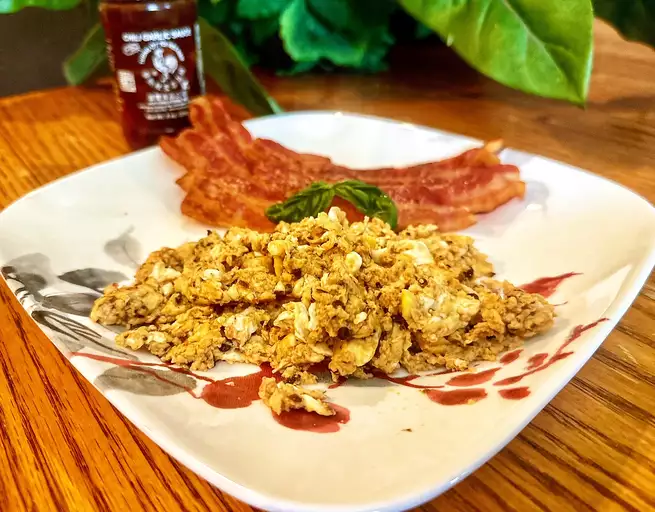

Homepage
Sriracha Scrambled Egg

Description
An excellent, spicy, quick-and-easy breakfast with simple ingredients.
Serve with toast and hash brown potatoes for a complete meal.
The recipe below is for 1 serving. Adjust the ingredients according to number of servings.
Ingredients
- 2 eggs
- 1 tablespoon half-and-half
- Salt
- Ground pepper
- 2 tablespoons of butter
Steps
- Beat eggs in a bowl with half-and-half, sriracha, salt, and pepper until smooth
- Melt butter in nonstick pan over medium-low heat, tilting the pan to cover surface entirely with butter
- Cook egg mixture in pan, stirring to slowly scramble eggs, until the eggs are fully set (in 3 to 5 minutes)